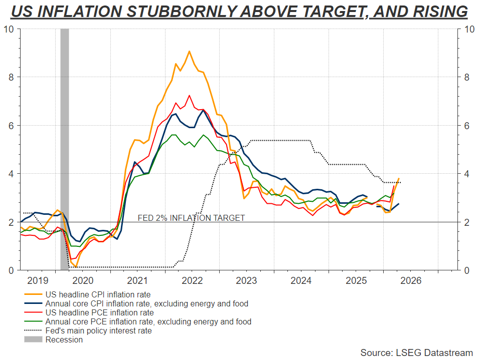
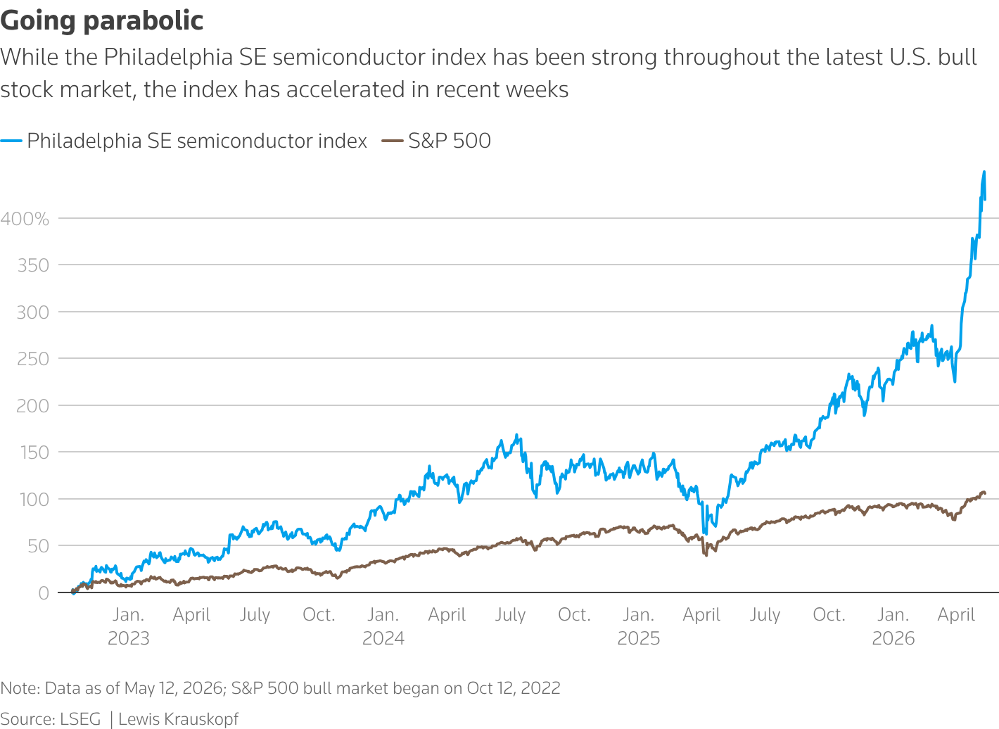

Today's Market Minute
- The U.S. has cleared around 10 Chinese firms to buy Nvidia's second-most powerful AI chip, the H200, but not a single delivery has been made so far, according to a Reuters exclusive.
'G2' choreography
In Asia, Japan's Nikkei hit another record and South Korea's SK Hynix was on the cusp of becoming the country's second trillion-dollar market cap after Samsung cleared that milestone last month. Asia's chip giants were in focus again as Taiwan's TSMC upped its standing forecast for chip demand through 2030 by 50% to $1.5 trillion.
Fed may have to hike to defend its credibility
Sitting out the oil shock may not be enough. The Federal Reserve may now have to prove it will act to meet its inflation target, much as its counterparts in Europe seem determined to do. Given what Wall Street forecasters currently think, that could pack quite a punch if it happens.
Year-end crude oil futures are near their highest level of the Iran war so far, and with little sign of a durable peace deal. April U.S. inflation data this week showed the mounting damage to already above-target prices.

Graphics are produced by Reuters.
Today's key chart

Graphics are produced by Reuters.
The Philadelphia SE semiconductor index has soared 64% in just six weeks, compared to a nearly 17% gain for the S&P 500. Shares of Micron Technology and Advanced Micro Devices more than doubled during that time, while Intel nearly tripled. Analysts estimate that gains in semis and memory stocks accounted for 70% of the $5.1 trillion in market capitalization added by the S&P 500 in 2026.